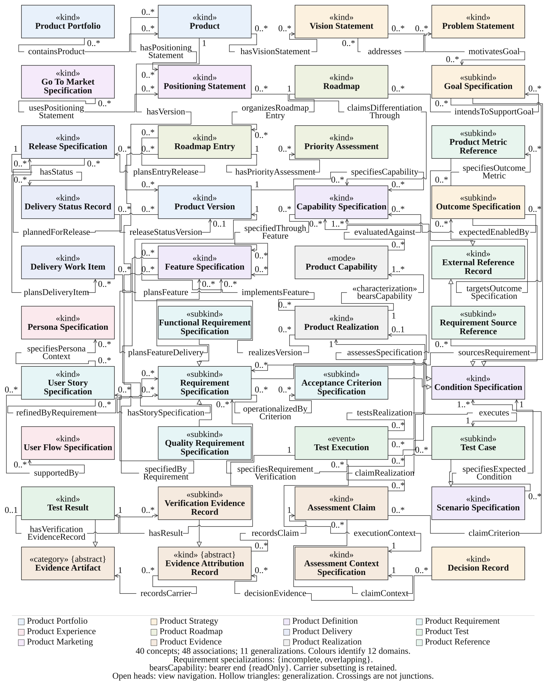

Software product knowledge, explicitly modeled
Ontology core v2.0.0 · WIDOCO reference
Start with the overview, browse the complete OWL reference, or find a class or property. The guide, formal specification, evaluation and downloads are connected by the same version.
OntoSPK distinguishes continuing products, intended specifications, actual realizations and evidence about their use. Its twelve domains connect strategic and development knowledge with testing, delivery and product evidence.
The 2.0.0 ontology core has a separate release record on GitHub. Check that record for publication state. Finite evaluation and independent scientific acceptance are separate matters.
Understand the model
Read domain definitions, identity commitments and conceptual relations.
Read the guideInspect formal commitments
Read every class, association and structural formula, then inspect the bounded OWL profile.
Conceptual and structural referenceReproduce the evidence
Run the finite published controls and read their limits.
Reproduction instructionsSelected conceptual view
Forty selected concepts; the complete model and its external boundaries remain in the reference.


Explore the OWL view in WebVOWL · Related-ontology comparison · Downloads
Formal specification and verification
Read the languages, worked commitment, finite FOL method, results and reproduction instructions. The site includes all fifteen accepted Wiki guide pages and connects them to the complete references and current evidence.